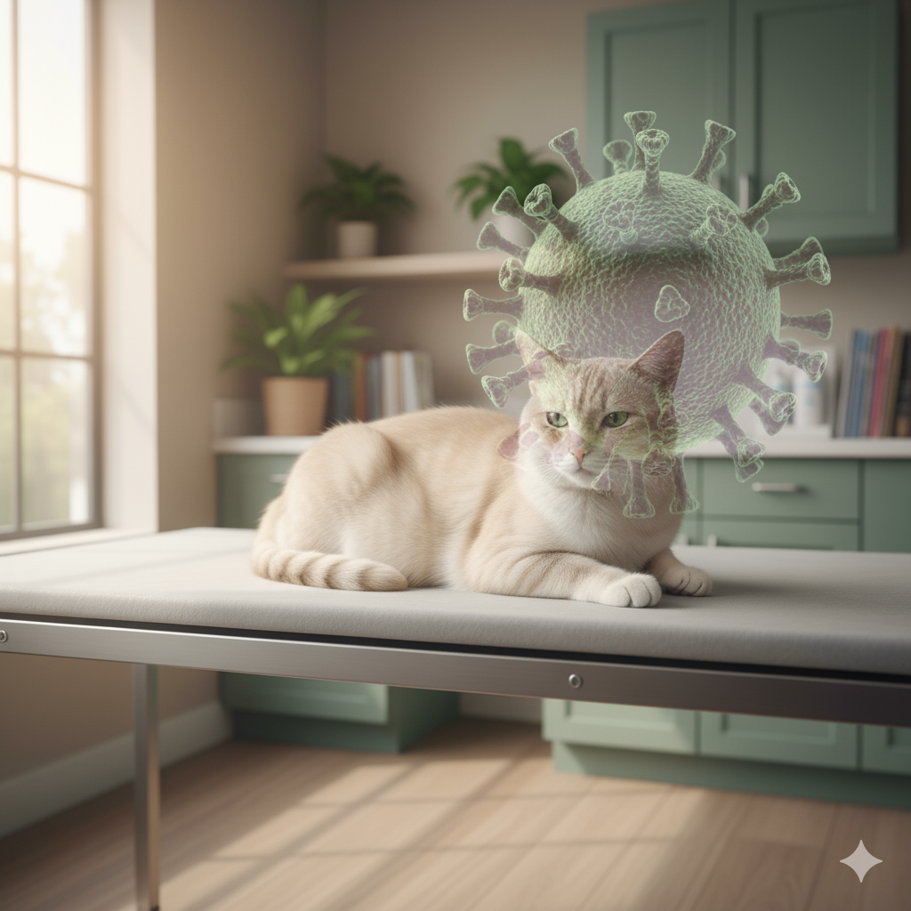

PIF em Gatos: Desvendando a Peritonite Infecciosa Felina

A história de uma doença temida que está ganhando novos capítulos
Se você tem gatos ou convive com eles, provavelmente já ouviu falar da PIF - uma sigla que costuma causar apreensão entre tutores e veterinários. Durante décadas, o diagnóstico de Peritonite Infecciosa Felina era praticamente uma sentença fatal. Mas a ciência tem trazido esperanças renovadas. Vamos entender o que é essa doença, como ela funciona e, principalmente, o que mudou no cenário do tratamento.
O que é a PIF?
A Peritonite Infecciosa Felina é uma doença viral grave que afeta exclusivamente os gatos, tanto domésticos quanto selvagens. Apesar do nome "peritonite" sugerir uma inflamação localizada no peritônio (membrana que reveste a cavidade abdominal), a PIF é, na verdade, uma doença sistêmica que pode afetar diversos órgãos.
O grande vilão desta história é um coronavírus - mas calma, não tem nada a ver com a COVID-19 que afeta humanos. Estamos falando do Coronavírus Entérico Felino (FCoV), um vírus extremamente comum entre gatos, especialmente aqueles que vivem em grupos.
A conexão com o coronavírus (mas não aquele que você está pensando)
Aqui entra uma questão importante: sim, a PIF é causada por um coronavírus, mas de uma família completamente diferente daquela que causa a COVID-19. O coronavírus felino não infecta humanos, e o coronavírus humano não infecta gatos. São vírus distintos que evoluíram para infectar espécies específicas.
Curiosamente, o FCoV é um vírus bastante "tranquilo" em sua forma original. Ele vive naturalmente no intestino de milhões de gatos pelo mundo todo, geralmente causando, no máximo, um quadro leve de diarréia ou até permanecendo completamente assintomático. A estimativa é que entre 25% a 40% dos gatos domésticos e até 80% a 90% dos gatos que vivem em abrigos, gatis ou ambientes com muitos felinos sejam portadores deste vírus.
A transformação fatal: quando o vírus muda
O grande mistério da PIF está na mutação. Em alguns gatos - felizmente uma minoria - o coronavírus entérico sofre uma mutação espontânea dentro do próprio organismo do animal e se transforma em uma versão muito mais agressiva: o vírus da PIF (FIPV, na sigla em inglês).
Essa mutação altera drasticamente o comportamento do vírus. Enquanto o FCoV original fica restrito ao intestino e é eliminado nas fezes, o vírus mutante ganha a capacidade de infectar células do sistema imunológico chamadas macrófagos, espalhando-se por todo o corpo e provocando uma reação inflamatória devastadora.
O que desencadeia essa mutação ainda não está completamente esclarecido pela ciência. Sabemos que alguns fatores aumentam o risco:
- Idade: Gatos muito jovens (menores de 2 anos) e idosos (acima de 10 anos) são mais vulneráveis
- Estresse: Mudanças bruscas de ambiente, cirurgias, introdução de novos animais
- Imunidade comprometida: Gatos com FIV ou FeLV têm risco aumentado
- Genética: Raças como Persas, Ragdolls e Bengals parecem ter predisposição
- Ambientes com muitos gatos: Quanto maior a densidade populacional, maior o risco
As duas faces da PIF: forma úmida e forma seca
PIF Úmida (Efusiva)
É a forma mais comum e de progressão mais rápida. Caracteriza-se pelo acúmulo de líquido em cavidades corporais:
- Abdômen distendido: Com acúmulo de líquido amarelado e viscoso, dando ao gato aparência de "barriga inchada"
- Dificuldade respiratória: Quando há líquido no tórax
- Febre persistente: Que não responde a antibióticos
- Perda de apetite e peso
- Letargia profunda
PIF Seca (Não-efusiva)
Mais sutil e de diagnóstico mais difícil. Nesta forma, não há acúmulo significativo de líquidos, mas sim formação de lesões granulomatosas em diversos órgãos:
- Sintomas neurológicos: Convulsões, alterações de comportamento
- Sintomas oculares: Uveíte, mudança na cor da íris
- Sintomas renais ou hepáticos
- Febre intermitente
- Emagrecimento progressivo
Como o vírus se transmite?
O coronavírus felino original (FCoV) é transmitido principalmente pela via fecal-oral:
- Caixas de areia compartilhadas
- Contato direto
- Transmissão vertical
- Fômites: Tigelas e brinquedos
Ponto crucial: a PIF em si não é contagiosa. O que se transmite é o FCoV comum; a mutação ocorre individualmente dentro de cada gato.
O diagnóstico: um quebra-cabeças clínico
Diagnosticar PIF continua sendo um desafio. Não existe um teste único e definitivo. O diagnóstico é feito pela combinação de fatores clínicos e laboratoriais:
- História e sinais clínicos
- Análise do líquido de efusão
- Exames de sangue: anemia, linfopenia, aumento de globulinas
- Teste de RT-PCR
- Biópsia
- Ultrassom e raio-X
O Dr. Niels Pedersen, da Universidade da Califórnia, desenvolveu critérios diagnósticos ainda hoje referência.
O que mudou: a revolução no tratamento
Durante décadas, a PIF era 100% fatal. Mas a partir de 2019, estudos com antivirais mudaram o cenário.
Os antivirais que mudaram o jogo
O GS-441524 trouxe taxas de cura entre 80% e 95%, agindo na replicação viral. Outro antiviral eficaz é o molnupiravir, com resultados comparáveis, e seu metabólito EIDD-1931 usado em casos neurológicos.
O dilema regulatório
Apesar da eficácia, o GS-441524 ainda não é aprovado oficialmente em muitos países, incluindo o Brasil. Isso gera um mercado paralelo. Porém, há avanços para sua regulamentação veterinária.
Protocolo de tratamento
- Dose: 4-6 mg/kg (formas não neurológicas); maiores para neurológicas
- Via: Subcutânea ou oral
- Duração: Mínimo de 12 semanas
- Monitoramento: Exames regulares
Prevenção: é possível evitar a PIF?
Não há prevenção garantida, mas boas práticas ajudam:
- Caixas de areia individuais e limpas
- Separar comedouros e bebedouros
- Reduzir densidade e estresse
- Quarentena de novos gatos
E quanto à vacina?
A vacina Primucell FIP existe, mas tem eficácia limitada e não é recomendada pela AAFP.
Perspectivas para o futuro
- Aprovação regulatória dos antivirais
- Novos compostos em estudo
- Terapias imunomoduladoras
- Melhores testes diagnósticos
- Estudo genético de suscetibilidade
Mensagem final: da desesperança à esperança
A PIF deixou de ser uma sentença. Hoje há cura em mais de 80% dos casos. O diagnóstico precoce e a informação são aliados vitais.
Referências e Leituras Recomendadas
- Pedersen, N. C. et al. (2019). *Efficacy and safety of the nucleoside analog GS-441524 for treatment of cats with naturally occurring feline infectious peritonitis.* Journal of Feline Medicine and Surgery.
- Sase, O. et al. (2024). *GS-441524 and molnupiravir are similarly effective for FIP treatment.* Frontiers in Veterinary Science.
- Addie, D. D. & Jarrett, O. (1998). *Feline coronavirus infections.* In: Infectious Diseases of the Dog and Cat.
Recursos online:
- Revista Foco - "Abordagens Terapêuticas para a PIF" (2024)
- Royal Canin Veterinary Focus
- FIP Advice (fipadvice@gmail.com)
- AAFP - catvets.com
- International Cat Care - icatcare.org
Nota: Este artigo tem caráter informativo e não substitui a consulta com médico veterinário.
← Voltar para o blog